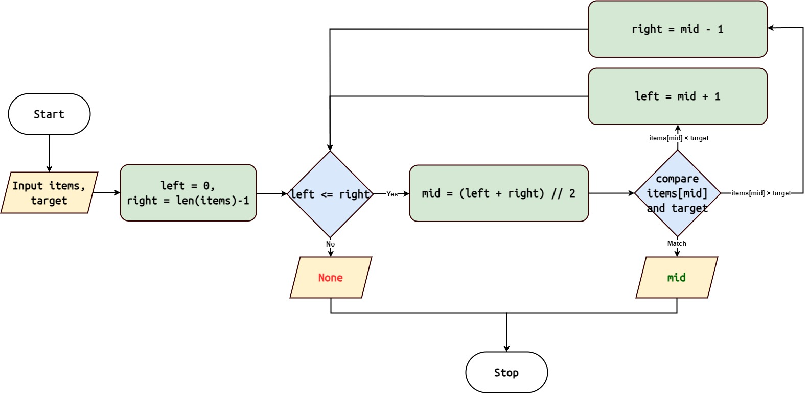

Binary Search
The Binary Search algorithm is a highly efficient searching algorithm used to find a target element in a sorted collection by repeatedly dividing the search interval in half.
Algorithm Overview
{kind=link}
Initialize two pointers, left and right, representing the leftmost and rightmost indices of the collection, respectively.
While the left pointer is less than or equal to the right pointer:
Calculate the middle index as (left + right) // 2.
If the middle element is equal to the target element, return its index.
If the middle element is greater than the target element, update the right pointer to mid - 1.
If the middle element is less than the target element, update the left pointer to mid + 1.
If the target element is not found after the loop, return None.
Note
Binary Search requires the collection to be sorted and has a time complexity of O(log n), where ‘n’ is the number of elements in the collection.
Implementation in Python
Here’s a Python implementation of the Binary Search algorithm:
1 def binary_search(target: Any, items: List[Any]) -> Optional[int]:
2 left, right = 0, len(items) - 1
3 while left <= right:
4 mid = (left + right) // 2
5 if items[mid] == target:
6 return mid
7 elif items[mid] < target:
8 left = mid + 1
9 else:
10 right = mid - 1
11 return None
Usage
To use the binary_search function:
1 from algorithms import binary_search
2
3
4 arr = [1, 2, 3, 4, 5, 6, 7, 8, 9]
5 target = 5
6 index = binary_search(target, arr)
7 if index is not None:
8 print(f"Element {target} found at index {index}")
9 else:
10 print(f"Element {target} not found")